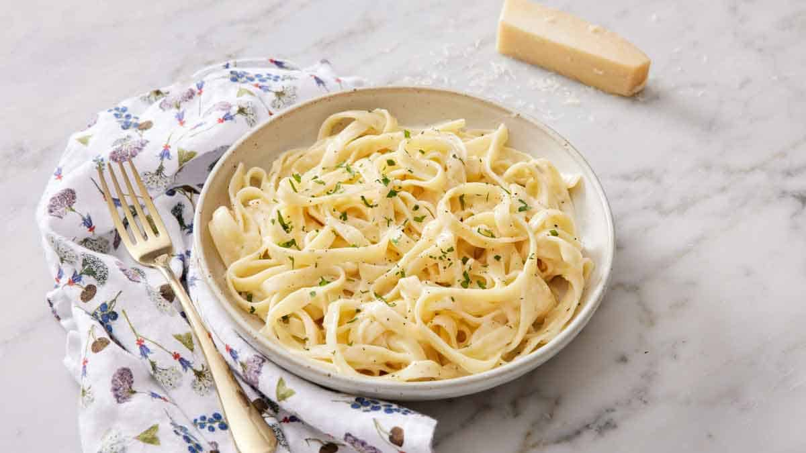

Alfredo Sauce

Description
This is a great and easy to make Alfredo sauce at home. The sauce is made from simple household ingredients such as butter, cream and pasta. The only thing you probobly need to buy is parmigiano reggiano.
Ingredients
Butter
Cream
Parmigiano Reggiano cheese
Salt
Steps
The first step to making Alfredo is to warm your butter and cream in a large saucepan over low heat. You will let it simmer (but not boil) for about 2 minutes.
Next, you will whisk in your garlic and seasonings. Whisking constantly for about one minute just to let the garlic cook.
Lastly, you will add your parmesan cheese and stir just until the cheese has melted and your sauce is smooth.